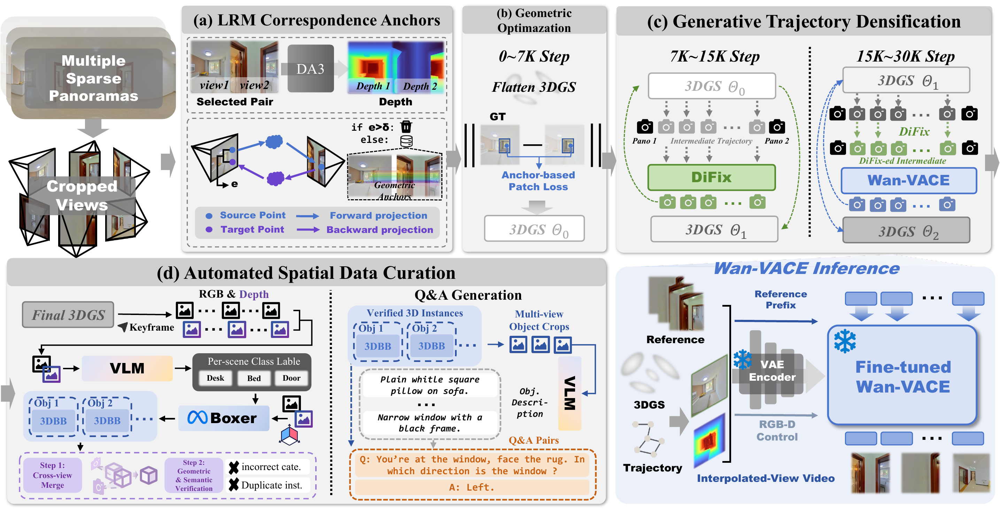
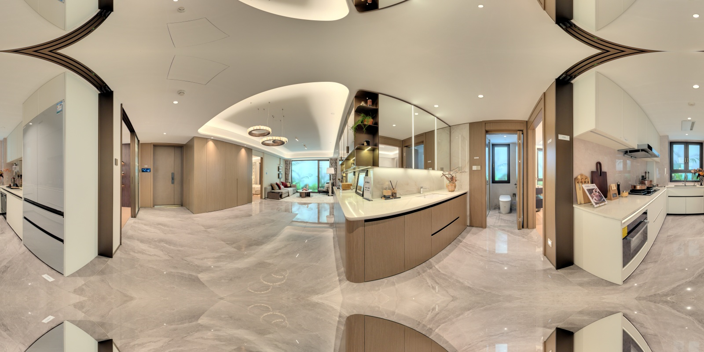
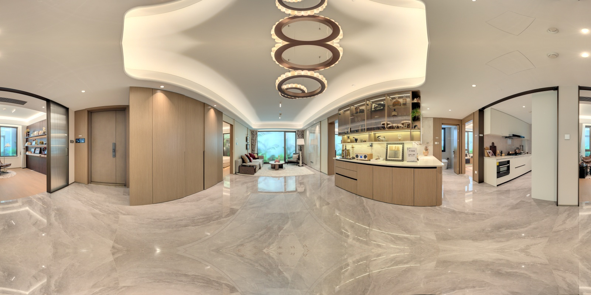

From sparse panoramas to spatial worlds
Holi-Spatial 360.
Generative Reconstruction from Sparse Panoramas
for Spatial Rendering and Intelligence
Framework
Open full-resolution figure
01 / Visual results
Explore four cases along matched camera paths.
Choose a baseline and compare in motion.
Sparse observations
Input panoramas
Two example references
Opening clip · Scene 00028

About these comparisons Qualitative results · matched cameras · different native inputs
These videos follow the same camera paths within each case. Native inputs, reference budgets, and training conditions differ across methods, so these are qualitative demonstrations rather than an equal-input benchmark.
Baselines. Released DiFix and ArtiFixer operate on the independent, real-RGB-only 3DGS result. PanoWorld uses its own panorama-based reconstruction. GSFixer also operates on the independent 3DGS result.
The two panorama examples show representative source observations, not the full reference set for each method. Ziroom examples are the supplied full-panorama reprojections of the original cube faces.
02 / Spatial understanding
3D bounding boxes & depth.
Paired RGB and depth views along the same camera path. Depth is rendered from the underlying Gaussian geometry.